library(tidyverse)
library(here)
library(fpp3)Exploratory - Time series
Load packages
Load data
data <- readRDS(here("data/processed_data/covid_wbe_7dma_weekly.rds"))
#from pre_processing scriptLook at time series
1. Viral Load
data %>% na.omit() %>% autoplot(log10(vl_7dma)) #smoothed avg viral load
data %>% na.omit() %>% autoplot(log10(avg_vl)) #non-smoothed avg viral load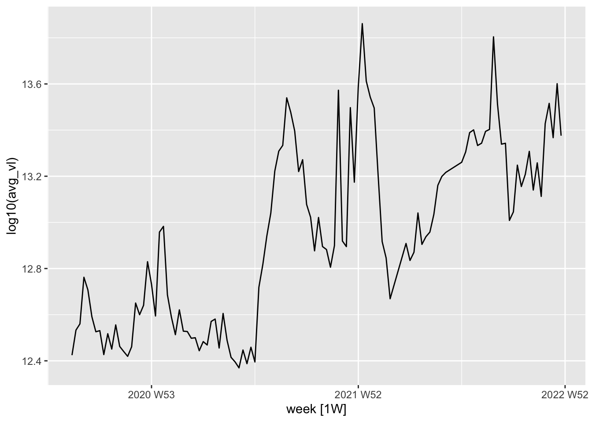
2. qPCR positivity rate
data %>% na.omit() %>% autoplot(avg_pos_rate) #non-smoothed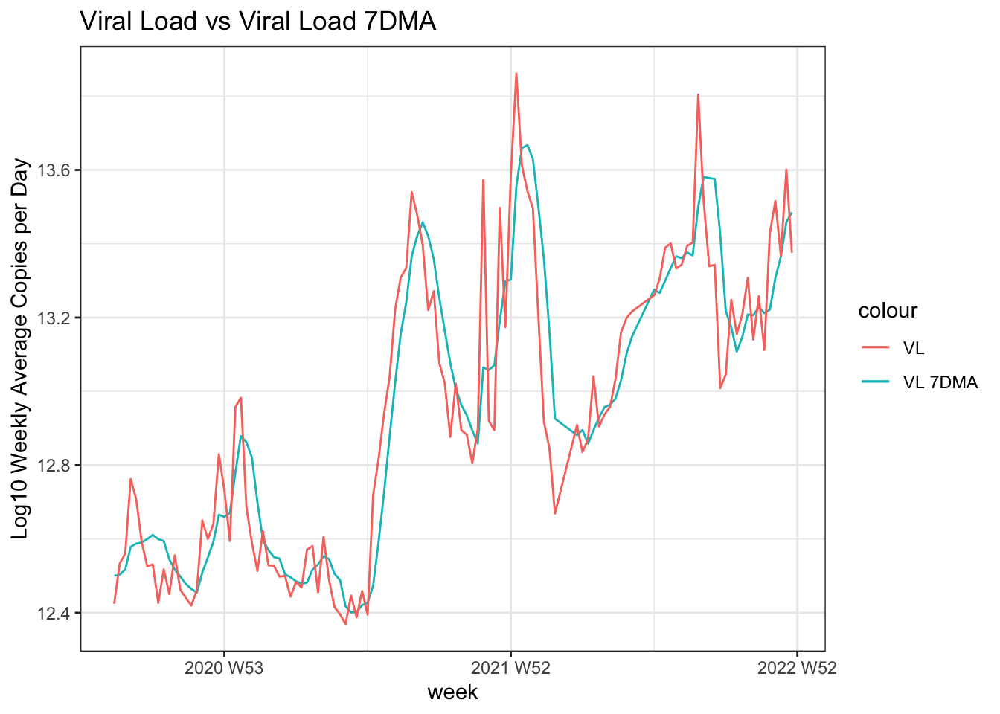
data %>% na.omit() %>% autoplot(pr_7dma) #smoothed
3. Case symptom onset
data %>% na.omit() %>% autoplot(cases.symptom.onset) #non-smoothed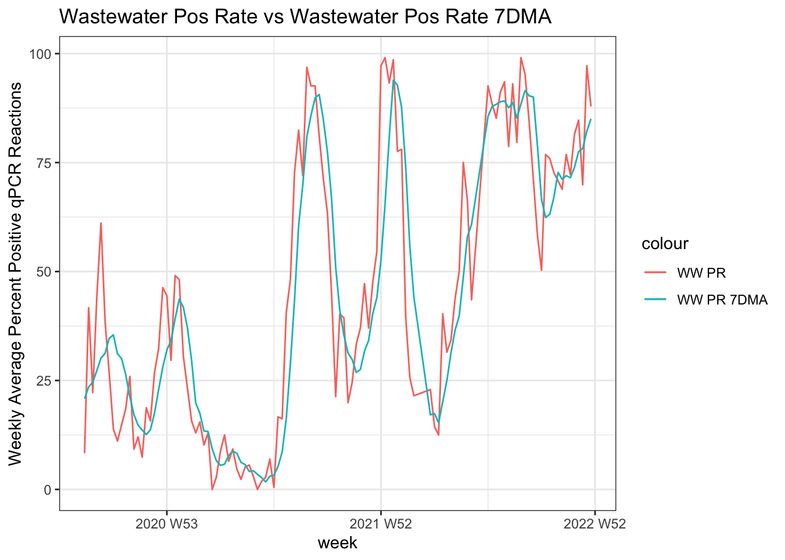
data %>% na.omit() %>% autoplot(symptom_onset_7dma) #smoothed
4. Cases reported
data %>% na.omit() %>% autoplot(cases.reported) #non-smoothed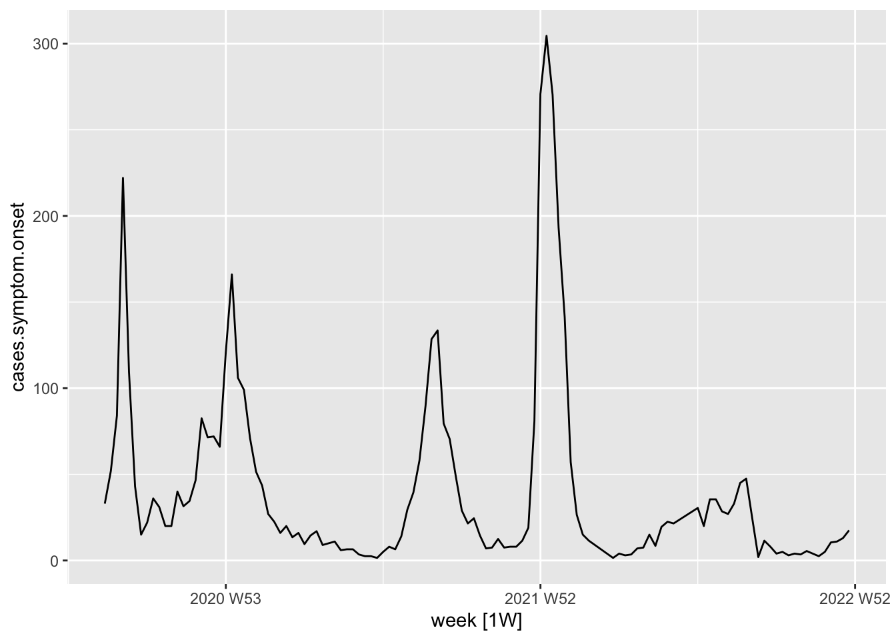
data %>% na.omit() %>% autoplot(case_report_7dma) #smoothed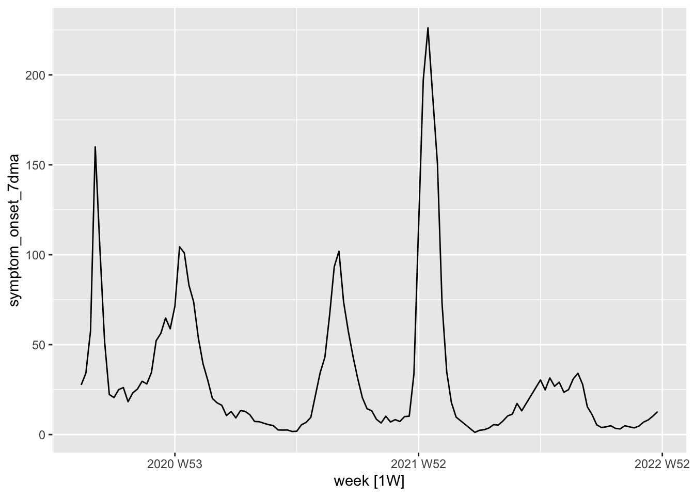
5. Case test positives
data %>% na.omit() %>% autoplot(pcr_pos) #non-smoothed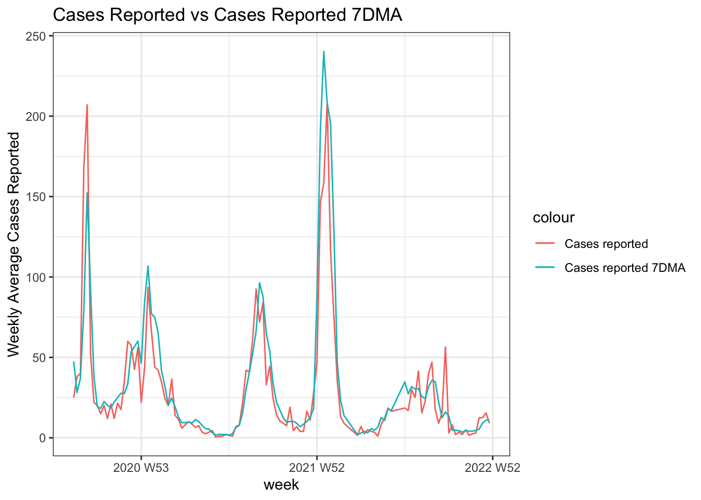
data %>% na.omit() %>% autoplot(case_pcr_pos_7dma) #smoothed by me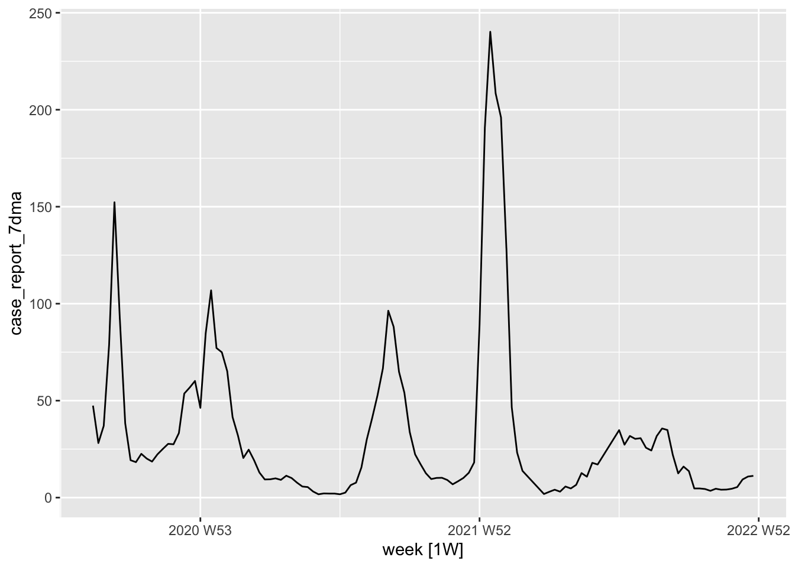
data %>% na.omit() %>% autoplot(pcr_pos_7dma) #smoothed by DPH
6. Case test positivity rate
data %>% na.omit() %>% autoplot(prop_pos) #non-smoothed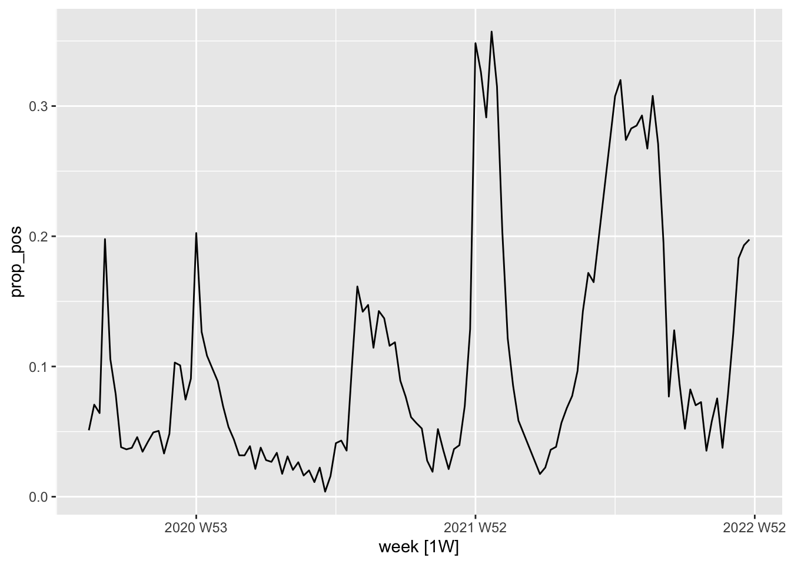
data %>% na.omit() %>% autoplot(case_prop_pos_7dma) #smoothed
7. qPCR PR and test PR comparison
data %>% na.omit() %>% ggplot(aes(x=week)) +
geom_line(aes(y=case_prop_pos_7dma*100)) +
geom_line(aes(y=pr_7dma, color="red"))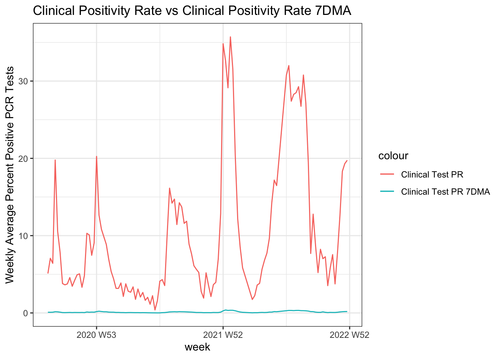
8. VL and test PR comparison
data %>% na.omit() %>% ggplot(aes(x=week)) +
geom_line(aes(y=case_pcr_pos_7dma)) +
geom_line(aes(y=pr_7dma, color="red"))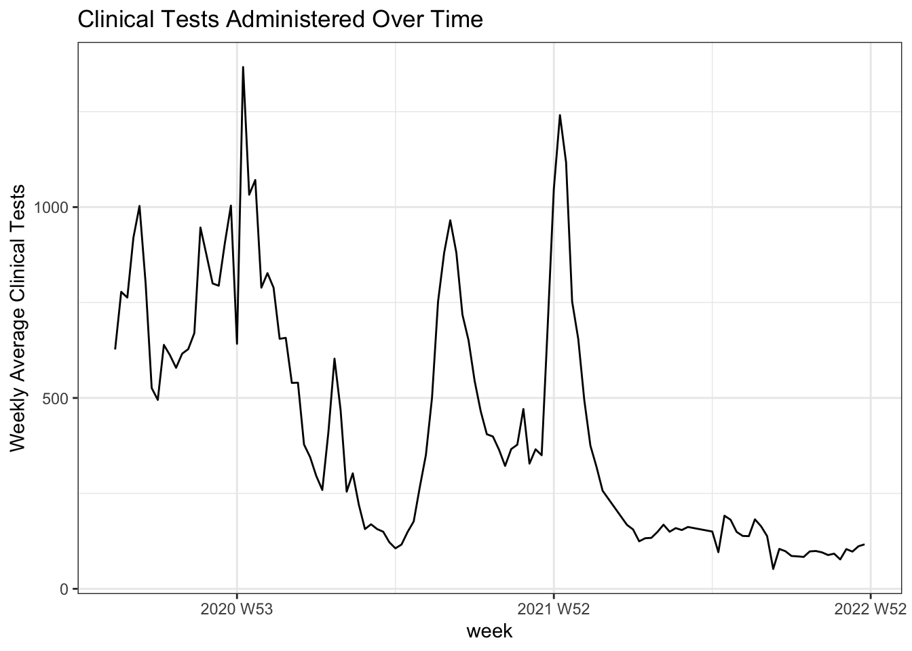
9. Test admin
data %>% na.omit() %>% autoplot(pcr_tests)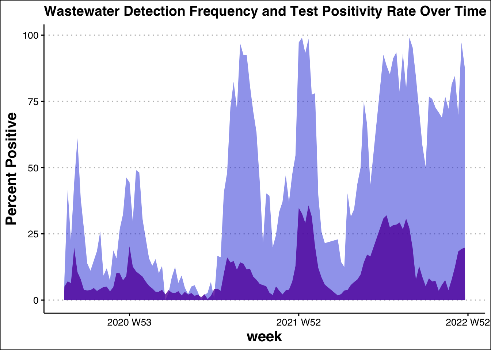
Notes
all time series follow roughly the same trend
peaks happen roughly twice per year, the first during the fall (Aug-Oct, potentially influenced by student population influx) and second during the winter (Dec-Feb)
tests reported, in general, peak during peak transmission times, but that trend does not continue past the beginning of 2022 (see 9. Test admin), indicating the shift to at-home testing and subsequent under-reporting
it may make sense to split at March-April 2022 as correlations between wastewater metrics and case metrics could weaken past this point